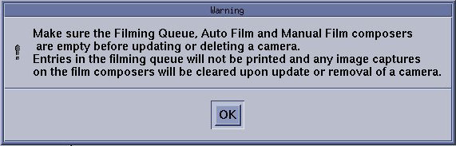

The Install Camera window appears, along with a warning message pop-up box, to remind you that all filming queues must be empty before you begin to update or delete a camera.
Illustration 1: Warning
